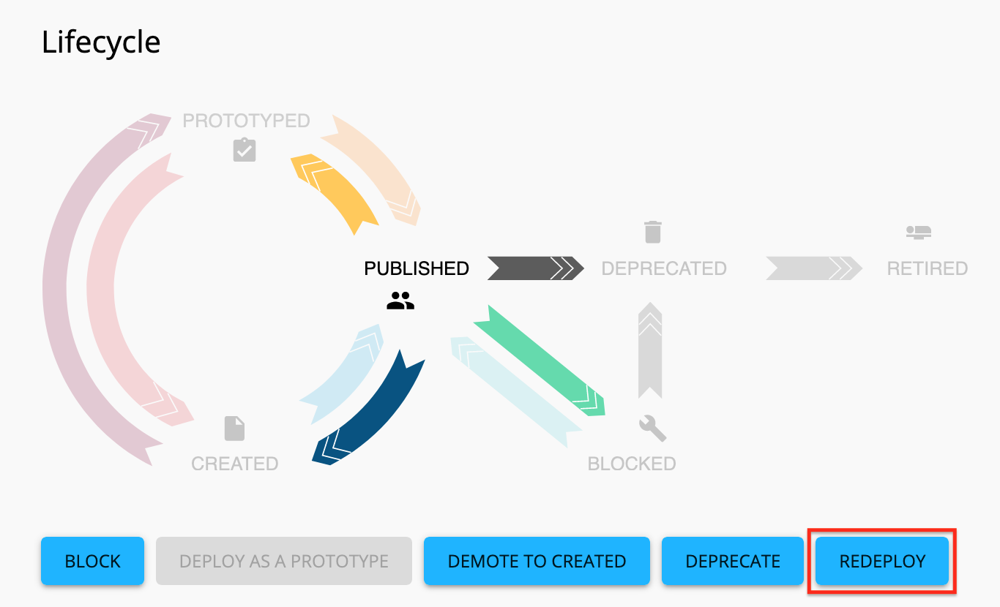

Upgrade WSO2 Open Banking from 1.5.0 to 2.0.0 for Australia¶
This page explains the following:
- Databases and Synapse configurations
- Disable Registry versioning
- Migrating Keystores
- Migrating custom components
- Upgrading Open Banking Identity and Access Management module (Open Banking Key Manager)
- Upgrading Open Banking API Manager
- Upgrading Open Banking Business Intelligence
- Application Attribute Changes
- Republish the APIs
Databases and Synapse configurations¶
-
Take a backup of the existing database used by WSO2 Open Banking 1.5.0. This backup is necessary in case the migration causes issues in the existing database.
-
Take a backup of the existing synapse configurations in WSO2 Open Banking 1.5.0. The synapse configuration is available in the
<WSO2_OB_APIM_HOME>/repository/deployment/server/synapse-configsdirectory.
Disable Registry versioning¶
When you have enabled versioning for Registry properties and if they are updated frequently, it can lead to an unnecessary growth in the Registry related database tables. To avoid this, WSO2 Open Banking 2.0 disables versioning by default.
If you enabled Registry versioning for your WSO2 Open Banking 1.5.0 setup, you need to disable it before upgrading the solution. The required steps are as follows:
-
Open the
<WSO2_OB_KM_150_HOME>/repository/conf/registry.xmland<WSO2_OB_APIM_150_HOME>/repository/conf/registry.xmlfiles. -
Locate the following properties in both files:
<versioningProperties>true</versioningProperties>
<versioningComments>true</versioningComments>
<versioningTags>true</versioningTags>
<versioningRatings>true</versioningRatings>
-
If the above configurations are true, run the relevant database script. Use the relevant versioning script provided by the WSO2 team.
Note
If the above versioning configurations are already set as false you should not run the database scripts.
Migrating Keystores¶
Copy the keystores (.jks files) from WSO2 Open Banking 1.5.0 to WSO2 Open Banking 2.0.0.
| Copy From | Copy To |
|---|---|
<WSO2_OB_KM_150_HOME>/repository/resources/security |
<WSO2_OB_IAM_200_HOME>/repository/resources/security |
<WSO2_OB_APIM_150_HOME>/repository/resources/security |
<WSO2_OB_APIM_200_HOME>/repository/resources/security |
<WSO2_OB_BI_150_HOME>/repository/resources/security |
<WSO2_OB_BI_200_HOME>/repository/resources/security |
Migrating custom components¶
Changed internal API context paths
The context paths of the following internal APIs have changed. If you have used the following for any custom implementation, update them accordingly:
Context path in 1.5.0 Context path in 2.0.0 /consent/api/openbanking/consent-mgt/cdsadminapi/api/openbanking/cds-admin-api/openbankingaustralia/api/openbanking/backend-cds/dynamicclientregistration/api/openbanking/dynamic-client-registrationRenamed JARs and packages
If you have used the following jar files/packages for any custom implementations, update them as follows:
Package name in 1.5.0 Package name in 2.0.0 com.wso2.finance.periodical.updatercom.wso2.finance.open.banking.periodical.updatercom.wso2.finance.status.validatercom.wso2.finance.open.banking.status.validatereidas-cert-validatorcom.wso2.finance.open.banking.eidas.cert.validator
WSO2 Open Banking Identity and Access Management module¶
The WSO2 Key Manager is referred to as the WSO2 Open Banking Identity and Access Management module in WSO2 Open Banking 2.0.0. This module is based on WSO2 Identity Server 5.10.0, which includes major upgrades to the main component and WSO2 Carbon Kernel. Any customized OSGi bundle added to Identity Server needs to be recompiled with the new dependency versions relevant to Identity Server 5.10.0.
To recompile the custom OSGi bundles:
-
Obtain the source codes of the custom OSGi component
-
Update the dependency versions in the relevant POM files according to Identity Server 5.10.0
-
Compile the project
Make sure to recompile the following and place them in the WSO2 Open Banking 2.0.0 solution:
| Content | Recompile | Copy to |
|---|---|---|
| Custom OSGI bundles(manually added files) | <WSO2_OB_KM_150_HOME>/repository/components/dropins |
<WSO2_OB_IAM_200_HOME>/repository/components/dropins |
| Custom JAR files (manually added files) | <WSO2_OB_KM_150_HOME>/repository/components/libs |
<WSO2_OB_IAM_200_HOME>/repository/components/libs |
WSO2 Open Banking API Management module¶
You need to copy the custom OSGi bundles and custom JAR files (manually added by you to the solution) as follows:
| Content | Copy from | Copy to |
|---|---|---|
| Custom OSGi bundles (manually added files) | <WSO2_OB_APIM_150_HOME>/repository/components/dropins |
<WSO2_OB_APIM_200_HOME>/repository/components/dropins |
| Custom JAR files (manually added files) | <WSO2_OB_APIM_150_HOME>/repository/components/lib |
<WSO2_OB_APIM_200_HOME>/repository/components/lib |
Upgrading Open Banking Identity and Access Management module (Open Banking Key Manager)¶
WSO2 Open Banking 2.0.0 refers to WSO2 Key Manager as the WSO2 Open Banking Identity and Access Management module. This section guides you on how to upgrade from Identity Key Manager 1.5.0 to Identity and Access Management 2.0.0.
This section explains the following:
- Setting Up Database
- Configuring the
deployment.tomlfile - Migrating secondary user stores
- Migrating Databases
Setting Up Database¶
Copy the relevant JDBC driver to the <WSO2_OB_IAM_200_HOME>/repository/components/lib directory.
Note
If you are using an Oracle database make sure the users have the CREATE PROCEDURE privilege before proceeding.
Configuring the deployment.toml file¶
WSO2 Open Banking 2.0.0 introduces a new configuration model where the users have all the product configurations in a single configuration file, namely deployment.toml.
-
Copy the
<WSO2_OB_IAM_200_HOME>/repository/resources/finance/scripts/wso2-obiam-conf/deployement/bg/deployment.tomlfile to the<WSO2_OB_IAM_200_HOME>/repository/conf/directory and replace the existing file. -
Open the
<WSO2_OB_IAM_200_HOME>/repository/conf/deployment.tomlfile and update the datasource configurations for the following databases: -
User Store
- Registry database(s)
- API Manager database
-
Open Banking Database
-
Datasource configurations in 1.5.0 maps with the 2.0.0 new configuration model as follows:
Key Manager 1.5.0 Identity and Access Management 2.0.0 WSO2AM_DBapim_dbWSO2CONFIG_DBconfigWSO2REG_DBshared_dbWSO2UM_DBWSO2UM_DBWSO2_OPEN_BANKING_DBopen_banking_database
Given below are sample configurations for each database type:
MySQL
config.url = "jdbc:mysql://localhost:3306/openbank_apimgtdb?autoReconnect=true&useSSL=false"
config.username = "root"
config.password = "root"
config.driver = "com.mysql.jdbc.Driver"
MSSQL
config.url = "jdbc:sqlserver://localhost:1433;databaseName=openbank_apimgtdb;encrypt=false"
config.username = "sa"
config.password = "Root"
config.driver = "com.microsoft.sqlserver.jdbc.SQLServerDriver"
Oracle
config.url = "jdbc:oracle:thin:@localhost:1521:ORCLCDB"
config.username = "C##bg_ob_apimgtdb"
config.password = "wso2carbon"
config.driver = "oracle.jdbc.driver.OracleDriver"
- The
deployment.tomlfile contains placeholder, update them with the hostnames of the following servers:
| Placeholder | Server |
|---|---|
IAM_HOSTNAME |
Identity and Access Management |
APIM_HOSTNAME |
API Management |
ANALYTICS_HOSTNAME |
Open Banking Business Intelligence |
Migrating secondary user stores¶
If you have created any secondary user stores for Open Banking 1.5.0, copy the content to the new setup as follows:
| Content | Copy from | Copy to |
|---|---|---|
| Secondary user stores | <WSO2_OB_IAM_150_HOME>/repository/deployment/server/userstores |
<WSO2_OB_IAM_200_HOME>/repository/deployment/server/userstores |
Migrating Databases¶
-
Get the migration client (
wso2is-migration-x.x.x.zip) provided by the WSO2 team. -
Extract it into a local directory. The directory where the
wso2is-migration-x.x.x.zipis extracted is referred to as<IS_MIGRATION_TOOL_HOME>. -
Copy the
<IS_MIGRATION_TOOL_HOME>/dropins/org.wso2.carbon.is.migration-x.x.x.jarfile into the<WSO2_OB_IAM_200_HOME>/repository/components/dropinsdirectory. -
Copy the
<IS_MIGRATION_TOOL_HOME>/migration-resourcesdirectory to the<WSO2_OB_IAM_200_HOME>root directory. -
Open the
<WSO2_OB_IAM_200_HOME>/migration-resources/migration-config.yamlfile: -
Make sure versions are as follows:
migrationEnable: "true" currentVersion: "5.7.0" migrateVersion: "5.10.0" -
Remove the following configurations under the version: "5.8.0" tag:
- name: "UMAPermissionTicketSchemaMigrator" order: 3 parameters: location: "step2" schema: "uma" -
Remove the following configurations under the version: "5.10.0" tag:
- name: "MigrationValidator" order: 2 - name: "SchemaMigrator" order: 5 parameters: location: "step2" schema: "identity" -
Update the
<WSO2_OB_IAM_200_HOME>/repository/conf/deployment.tomlby configuring the previous user store.
[user_store]
type = "database"
#type = "database_unique_id"
#class = "org.wso2.carbon.user.core.jdbc.UniqueIDJDBCUserStoreManager"
- Start the WSO2 Open Banking Identity Access Management 2.0.0 server with the migration client. Use the commands given below:
Linux/Unix or macOS
sh wso2server.sh -Dmigrate -Dcomponent=identity
Windows
wso2server.bat -Dmigrate -Dcomponent=identity
-
Once the migration client execution is completed, stop the server.
-
Remove the
<WSO2_OB_IAM_200_HOME>/repository/components/dropins/org.wso2.carbon.is.migration-x.x.x.jarfile. -
Remove the
<WSO2_OB_IAM_200_HOME>/migration-resourcesdirectory. -
Restart the Identity and Access Management server now.
Upgrading Open Banking API Manager¶
This section guides you on how to upgrade WSO2 Open Banking API Management 1.5.0 to 2.0.0.
This section contains the following:
- Setting Up Database
- Configuring the
deployment.tomlfile - Moving Synapse configurations
- Migrating Databases
- Migrating API Manager artifacts
- Reindexing Registry artifacts
Setting Up Database¶
Copy the relevant JDBC driver to the <WSO2_OB_APIM_200_HOME>/repository/components/lib directory.
Note
If you are using an Oracle database make sure the users have the CREATE PROCEDURE privilege before proceeding.
Configuring the deployment.toml file¶
WSO2 Open Banking 2.0.0 introduces a new configuration model where the users have all the product configurations in a single configuration file, namely deployment.toml.
-
Copy the
<WSO2_OB_APIM_200_HOME>/repository/resources/finance/scripts/wso2-obam-conf/deployement/bg/deployment.tomlfile to the<WSO2_OB_APIM_200_HOME>/repository/conf/directory and replace the existing one. -
Open the
<WSO2_OB_APIM_200_HOME>/repository/conf/deployment.tomlfile and update the datasource configurations for the following databases: -
User Store
- Registry database(s)
- API Manager database
-
Open Banking Database
-
Datasource configurations in 1.5.0 maps with the 2.0.0 new configuration model as follows:
| API Manager 1.5.0 | API Manager 2.0.0 |
|---|---|
WSO2AM_DB |
apim_db |
WSO2CONFIG_DB |
config |
WSO2REG_DB |
shared_db |
WSO2UM_DB |
WSO2UM_DB |
WSO2AM_STATS_DB |
WSO2AM_STATS_DB |
WSO2_OPEN_BANKING_DB |
open_banking_database |
Given below are sample configurations for each database type:
MySQL
config.url = "jdbc:mysql://localhost:3306/openbank_apimgtdb?autoReconnect=true&useSSL=false"
config.username = "root"
config.password = "root"
config.driver = "com.mysql.jdbc.Driver"
MSSQL
config.url = "jdbc:sqlserver://localhost:1433;databaseName=openbank_apimgtdb;encrypt=false"
config.username = "sa"
config.password = "Root"
config.driver = "com.microsoft.sqlserver.jdbc.SQLServerDriver"
Oracle
config.url = "jdbc:oracle:thin:@localhost:1521:ORCLCDB"
config.username = "C##bg_ob_apimgtdb"
config.password = "wso2carbon"
config.driver = "oracle.jdbc.driver.OracleDriver"
- The deployment.toml file contains placeholder, update them with the hostnames of the following servers:
| Placeholder | Server |
|---|---|
IAM_HOSTNAME |
Identity and Access Management |
APIM_HOSTNAME |
API Management |
ANALYTICS_HOSTNAME |
Open Banking Business Intelligence |
Moving Synapse configurations¶
-
Stop all WSO2 API Manager server instances that are running.
-
Move the following content to WSO2 Open Banking 2.0.0:
Warning
When replacing the Synapse configurations, do not replace the following, as they contain API Management module version 2.0.0. -
/api/_RevokeAPI_.xml-/sequences/_cors_request_handler_.xml-/sequences/main.xml
| Content | Copy from | Copy to |
|---|---|---|
| Synapse super tenant configurations | <WSO2_OB_APIM_150_HOME>/repository/deployment/server/ synapse-configs/default |
<WSO2_OB_APIM_200_HOME>/epository/deployment/server/synapse-configs/default |
Migrating Databases¶
-
To migrate data into WSO2 Open Banking API Manager 2.0.0, execute the relevant database script against the
WSO2AM_DBdatabase. -
Get the API Manager migration database scripts provided by the WSO2 team.
Migrating API Manager artifacts¶
-
Migration resources:
-
Get the API Manager migration resources (
migration-resources.zip) provided by the WSO2 team. -
Extract the received
migration-resources.zip. -
Copy the extracted
migration-resourcesdirectory to the<WSO2_OB_APIM_200_HOME>directory. -
Migration client:
-
Get the API Manager migration client (
org.wso2.carbon.apimgt.migrate.client-3.1.0-3.jar) provided by the WSO2 team. -
Copy the downloaded
org.wso2.carbon.apimgt.migrate.client-3.1.0-3.jarto the<WSO2_OB_APIM_200_HOME>/repository/components/dropinsdirectory. -
Start the API Management server with the migration client. Use the commands below:
Linux/Unix or macOS
sh wso2server.sh -DmigrateFromVersion=2.6.0
Windows
wso2server.bat -DmigrateFromVersion=2.6.0
-
Once the migration client execution is completed, stop the server.
-
Remove the
<WSO2_OB_APIM_200_HOME>/repository/components/dropins/org.wso2.carbon.apimgt.migrate.client-3.1.0-3.jarfile. -
Remove the
<WSO2_OB_APIM_200_HOME>/migration-resourcesdirectory.
Reindexing Registry artifacts¶
-
Execute the given database scripts against the
SHARED_DBdatabase. Get the relevant registry indexing script provided by the WSO2 team. -
Add the following configurations to the
<WSO2_OB_APIM_200_HOME>/repository/conf/deployment.tomlfile.
[indexing]
re_indexing= 1
-
Backup the
<WSO2_OB_APIM_200_HOME>/solrdirectory if it exists, then delete it. -
Start the API Management server.
Upgrading Open Banking Business Intelligence¶
This section explains how to upgrade from Open Banking Business Intelligence 1.5.0 to 2.0.0.
Warning
These steps are only required if you have configured Open Banking Business Intelligence in your existing deployment.
Migrating the Analytics database¶
-
Get the analytics migration script (
analytics_migration_scripts.zip) and reporting stats script (reporting_stats_scripts.zip) provided by the WSO2 team. -
Execute them against the given databases:
| Database name | Script to execute |
|---|---|
APIM_ANALYTICS_DB |
analytics_migration_scripts.zip |
OB_REPORTING_DB |
reporting_stats_scripts.zip |
-
After a WUM update for Open Banking Business Intelligence 1.5.0, the data types and field-names of certain database tables were changed. It is important to reflect these changes in your databases before the upgrading process.
-
Get the relevant updating analytics database scripts provided by the WSO2 team.
- Update the scripts by replacing the
<APIM_ANALYTICS_DB>placeholder with the hostname of your database server. - Execute the relevant script, according to your database type to perform these changes if they are not already available.
Migrating configurations¶
-
Open the following configuration files and update them by configuring the databases that you have used in Open Banking Business Intelligence 1.5.0.
-
<WSO2_OB_BI_200_HOME>/conf/dashboard/deployment.yaml -
<WSO2_OB_BI_200_HOME>/conf/worker/deployment.yaml -
Open the following siddhi files and replace the
<ANALYTICS_HOSTNAME>placeholder with the hostname of your Open Banking Business Intelligence server. -
<WSO2_OB_BI_200_HOME>/deployment/siddhi-files/TRAAccountValidationApp.siddhi -
<WSO2_OB_BI_200_HOME>/deployment/siddhi-files/TRAPaymentValidationApp.siddhi -
Place the relevant JDBC driver as an OSGi bundle in the
<WSO2_OB_BI_200_HOME>/libdirector.
For Oracle or MSSQL database drivers:
You need to include the database driver corresponding to the database for the WSO2 Open Banking Business Intelligence server to communicate with the database. The WSO2 Open Banking Business Intelligence is an OSGi-based product. Therefore, when you integrate third-party products such as Oracle and MS SQL with WSO2 OB BI, you need to check whether the libraries you need to add are OSGi based. If they are not, you need to convert them to OSGi bundles before adding them to the
<WSO2_OB_BI_200_HOME>/libdirectory.To convert the jar files to OSGi bundles, follow the steps below.
Download the non-OSGi jar for the required third party product, and save it in a preferred directory on your machine.
Go to the
<WSO2_OB_BI_200_HOME>/bindirectory. Run the command given below to generate the converted file in the<WSO2_OB_BI_200_HOME>/libdirectory../jartobundle.sh <PATH_TO_NON-OSGi_JAR> ../lib
- Go to the
<WSO2_OB_BI_200_HOME>/bindirectory and start the Worker and Dashboard profiles.
Application Attribute Changes¶
To upgrade the application attribute data :
- Go to the
<WSO2_OB_IAM_200_HOME>/dbscripts/finance/apimgt/migration_1.5.0_to_2.0.0directory. - Execute the relevant database script against the
WSO2AM_DBdatabase. - Restart the WSO2 API Management module.
Republish the APIs¶
To use the APIs published in WSO2 Open Banking 1.5.0 setup, you need to redeploy these APIs to reflect the changes from the sequence files.
Before you begin:
- Open the
<WSO2_OB_APIM_200_HOME>/repository/resources/api_templates/velocity_template.xmlfile.- Update the
<IAM_HOSTNAME>placeholder with the hostname of your Identity and Access Management server.- Restart the API Management server.
-
Sign in to the WSO2 API Publisher at
https://<WSO2_OB_APIM_200_HOST>:9443/publisher. -
Navigate to the API listing page, and select the API which you want to edit.
-
Go to Runtime Configurations using the left menu panel.
-
Click the edit button under Request > Message Mediation.
-
Now, select the Custom Policy option.
-
Upload the relevant in-sequence file from the
<WSO2_OB_APIM_200_HOME>/repository/resources/finance/apis/berlin-group.orgdirectory. -
Scroll down and click SAVE.
-
Go to Lifecycle using the left menu panel.
- Redeploy the API by clicking the Redeploy button.
